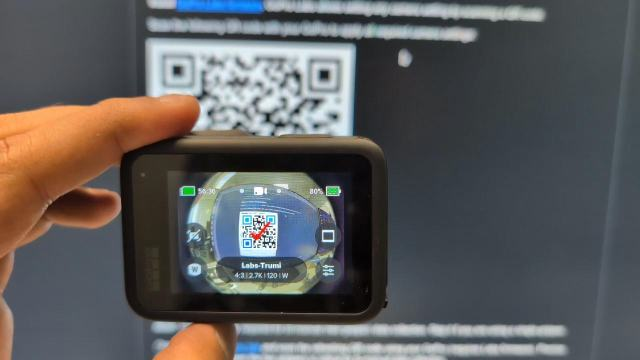
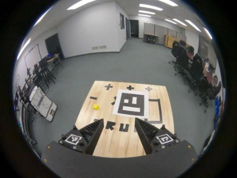
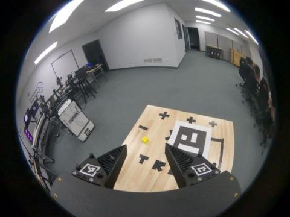
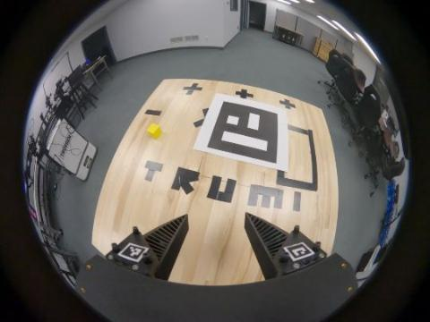
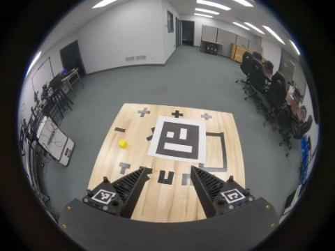
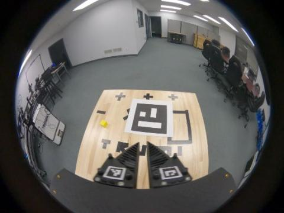
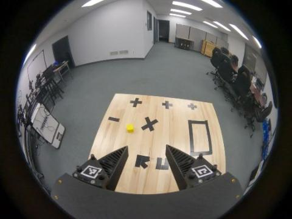
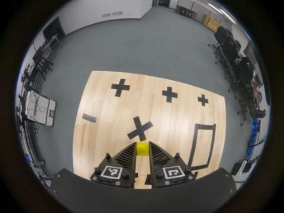
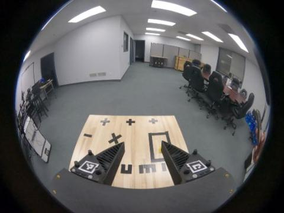

Two hours to take the TRumi from box to a processed dataset. You'll finish with one recording session that passes every check in the pipeline report, and one deliberate bad take so you know what failure looks like.
Expect image ok: orb_slam3, three tool files, and at least 20 GB free. MCAP output runs about 75 MB per second of demo footage, so 10 demos of 8 s come to roughly 6 GB.
Print & pack
What to have on the table
Print
The kit includes one, so the spare is only a backup. Print on US Letter at 100% / Actual size, never "Fit to page". The black square must measure 160 mm edge to edge; I measured the PDF at 160.1 mm. Tape or glue it to something rigid and flat, like foam board.
Replacement PDFs (IDs 0, 1, 6, 7, each 16 mm) are in the TRumi data collection docs if a mount is damaged.
Pack
The two hours
Run of show
Paste this once in the Mac terminal you'll use all session. Every later command relies on it.
RTX=ethanwinchell@ethanwinchell.tail79141c.ts.net
ls /Volumes # find the SD card's name after inserting it
CARD=/Volumes/<card name>/DCIM/100GOPRO # edit <card name>
A0:00 – 0:20
Set up the camera
If it fails, pull and reinsert the battery and start over.
This stops the GoPro applying its own distortion correction, so the pipeline gets raw frames.
Only Labs firmware reads QR codes, so if nothing happens, first check the firmware step above worked. Turn the screen brightness to maximum and tilt the laptop to get rid of reflections.
Tap anywhere or press Esc to close.
Use this QR code, not the one in the GitHub README.The README's QR sets p60 (60 fps). This one, from the official docs site, sets p120 (120 fps), which matches the documented settings and Trossen's example footage.

Trossen's photo of a correctly applied preset.
This removes the UPDATE folder. An empty card means every copy step below picks up exactly the clips you want.
For one gripper, use the Gripper 0 finger holders (tags 0 and 1).
It checks camera model, firmware, 2704×2028, about 120 fps, IMU at about 200 Hz, and the share of frames where each finger tag is seen.
A WARN on the left finger at 60–80% is normal. Trossen's own example gets 70% left and 100% right. A resolution or fps FAIL means the preset didn't apply: scan the QR again.
The pipeline treats the earliest non-mapping clip as the gripper calibration, so a leftover test clip would take its place.
C0:35 – 1:05
Record session 1
A session is one location: a mapping video, a gripper calibration video, then the demos, recorded in that order as separate clips. Fill in the take log as you go.
SLAM needs features to track. Trossen's example is a plain wood table dressed with black tape shapes (+, ×, the letters TRUMI, a rectangle). Do the same on any plain surface. Avoid facing blank walls or ceilings.
The marker fixes the map's origin and scale. A wrong size gives wrong poses.

0 s: starts on the marker

20 s: lower angle, from the side

50 s: closer pass, marker still in view

Finger tags sit at the bottom of the frame

Full close, then full open, five times
Trossen's example demos were recorded with the marker gone. SLAM localizes against the map built in the mapping video.
Start recording with the camera already facing the table. Move smoothly. My suggestion: hold still for about a second at the start and end of each demo. A demo is dropped if SLAM loses tracking for more than 10 frames (about 0.2 s).

Start: facing the table

Grasp

Place, then hold still
These should come back flagged or dropped. That confirms the report catches bad data before you collect at scale.
No renaming needed. The pipeline takes the largest clip as the mapping video and the earliest remaining clip as calibration. It moves files as it works, so the card is your only untouched copy until processing is done.
Trossen's example (62 s mapping, 2 demos) took 7 minutes. Expect 10–15 minutes for 10–12 demos. caffeinate keeps the Mac awake so the SSH session doesn't drop. While it runs, start setting up block E.
E1:25 – 1:50
Session 2: fix or vary
Always use a new session folder. The pipeline has already moved session 1's files.
If session 2 uses two grippersSet the second gripper up as Gripper 1 using the spare finger holders (tags 6 and 7). Sync timecode on both cameras before recording: run the line below, open http://localhost:8000/index.html on the Mac, and scan the changing QR code with each GoPro.
Record one calibration clip per gripper. Both cameras name files the same way (GX01…), so copy each card with a prefix to avoid overwriting:
# card from camera A, then swap cards and repeat with camB
for f in $CARD/*.MP4; do rsync -aP "$f" "$RTX:~/trumi_sessions/$S/raw_videos/camA_$(basename "$f")"; done
Check that /cameras/camera0/image plays, robot0/eef/state follows a smooth path, and robot0/gripper/state width moves between about 0 and about 0.055 m as the gripper closes and opens.
Pass criteria
What "working" looks like
Where a threshold comes from the pipeline, the code enforces it. The rest are my targets, based on Trossen's example session processed on the RTX box last night.
Check
Pass
Trossen example
Clip check (block B)
All PASS; finger tags ≥ 60%
left 70% · right 100%
SLAM map built
Report shows PASS
PASS
Mapping video tracked
≥ 90% of frames
98%
Marker calibration
PASS (tx_slam_tag.json written)
PASS
Gripper range
Span around 50–60 mm
66.9–123.7 mm · span 57
Lost frames per good demo
≤ 10 (pipeline drops above that)
0 and 0
Good demos kept
≥ 80%; both stress demos flagged or dropped
2 of 2
Raw data used (step 06 log)
≥ 90%
99%
Output
One .mcap per kept demo
2 files · 952 MB
Troubleshooting
When something fails
You see
Likely cause
Fix
Resolution or fps FAIL
Preset not applied, or the 60 fps README QR was used
Scan the QR code on this page again and check the screen reads 2.7K | 120
IMU FAIL
Not on Labs firmware
Reinstall Labs (block A), then scan the QR again
Finger tags under 60%
Glare or shadow on the fingers; dirty or wrong finger holders
Even out the lighting and clean the mounts. Last resort: TH=0.5 before process_session.sh, then check the gripper range still looks right
MAP FAILED, or mapping tracked under 90%
Not enough texture, or moving too fast
Add tape texture, move slower, record a longer mapping video, and redo the whole session
Marker calibration FAIL
Marker not seen enough during mapping
Keep the marker in frame more, check it's 160 mm, redo mapping
Gripper range FAIL, or the wrong clip used for calibration
A stray clip was recorded before calibration
Recopy from the card into a new session folder without the stray clip
Demo marked BAD (over 10 lost frames)
Fast motion, looking at blank areas, or starting away from the mapped area
Slow down, start each demo facing the table, keep the scene textured
Pipeline stops partway
SSH dropped while the Mac slept
Run the same command again. Finished steps are skipped
Take log
Which clip is which
Write the GoPro file number shown in playback, or the GX01xxxx name, next to each take.
~/trumi_sessions/. dryrun_flat is Trossen's example, processed with these tools as a flat card dump (all checks PASS).
Local fixes
Two upstream bugs are patched locally: marker-ID handling under OpenCV 5 (cv_util.py) and a multimethod<2 pin for scikit-fda. Finger-tag thresholds are lowered from 0.8 to 0.6; at 0.6, gripper width still matched Trossen's reference to 0.14 mm.